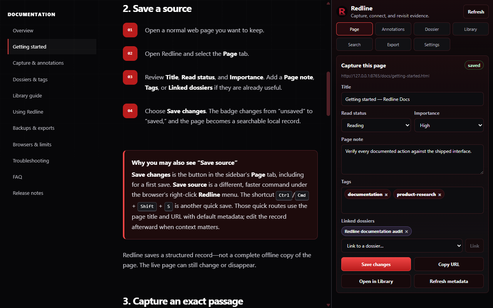

Structured source records
Save a page with its title, URL, note, tags, reading status, importance, and dossier links.
Local-first research for the open web
Save sources, capture exact passages, connect research in dossiers, and export a portable library—without a Redline account or cloud sync.

More than a bookmark
Redline keeps the source beside the thought: what you read, the exact passage that mattered, and what you planned to do with it.
Save a page with its title, URL, note, tags, reading status, importance, and dossier links.
Capture selected text as a highlight, claim, source, question, follow-up, warning, or another research type.
Group material around a case or question while using tags to classify themes across your library.
Search saved titles, URLs, notes, annotations, dossiers, tags, and source domains without a hosted index.
Revisit saved passages when the page still matches. The library keeps the record even when a changed page needs review.
Create a full JSON backup or export Markdown, CSV, XML, BibTeX, RIS, CSL JSON, EndNote XML, and more.
A simple loop
Capture while the context is fresh, then refine the record when you return to your library.
Turn the active page or a link into a structured local source record.
Select the exact language that supports a claim, question, or next step.
Connect sources through dossiers, tags, status, importance, and links.
Create a backup, source pack, table, citation file, or readable archive.
Inside Redline
Explore representative Redline workflows using illustrative sample content.
Privacy model
Redline’s current release has no account system, hosted sync, analytics, advertising, or Redline server.
Read the privacy policyDocumentation
Use the quick start for your first source, or go straight to backups, troubleshooting, and common questions.
Save a source, capture a passage, build a dossier, and make your first backup.
Open guide →Protect your local vault and choose the right format for the next step.
Protect your data →Work through capture, highlight, sidebar, search, import, and download issues.
Find a fix →Need a hand?
Search the docs first, then report a reproducible bug or suggest an improvement through the public support repository.